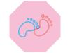
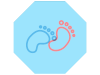
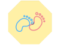
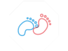
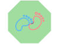
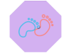

Caminho da Maternidade
Período Premunitório
Tempos - Mecanismo do Parto
Contrações Uterinas Durante a Gestação
Contrações Uterinas Durante o Parto
Modificações Fisiológicas na Mulher
Dúvidas Frequentes
Sobre nós





